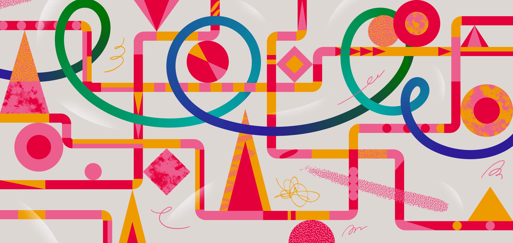

Markdown III
|
Reporting mit R The R Bootcamp |

|

from dvisiondesign.net
Überblick
In diesem Practical …
Am Ende des Practicals wirst du wissen wie man:
- …
- …
- …
Aufgaben
A - Setup
- Öffne dein
TheRBootcampR Projekt und öffneairbnb_level_two.Rmd, welches das fertige Produkt am Ende des zweiten Markdown Practicals enthält.
B - YAML
ergänze toc. Knitten.
toc depth. Knitten.
ergänze includes: in_header: ../2_Assets/header.Rhtml. Knitten.
ergänze theme: lusine
C - Grafiken
- ergänze folgendes im setup
theme_set(theme_minimal())- ergänze folgendes im setup
ggplot <- function(...) ggplot2::ggplot(...) +
scale_fill_gradientn(colors = c('#555555','#6BB7B9')) +
scale_colour_gradientn(colors = c('#555555','#6BB7B9'))D - CSS
- setze center um die beiden cap definition:
"<center>Abbildung 1. Neueinstellungen pro Monat</center>"
"<center>Abbildung 2. Neueinstellungen pro Bezirk</center>"im sjplot table ergänze
CSS = list(css.caption = "font-weight:500")ergänze auch
css.table = "width: auto; margin-right: 0px;margin-left: auto;"
E - Columns
- Ergänze folgendes zwischen
#### Entwicklungund pargraph danach. Nicht Knitten!!
<table>
<col width = 40%>
<col width = 10%>
<col width = 50%>
<tr>
<td>- Ergänze zwischen zweitem paragprah und chunk
</td>
<td>
</td>
<td>- Ergänze zwischen chunk und
#### Stadtteile
</td>
</tr>
</table>Jetzt knitten…
Ergänze zwischen chunk nach
#### Stadtteileund chunk danach. Nicht Knitten!!
<table>
<col width = 40%>
<col width = 10%>
<col width = 50%>
<tr>
<td>- Ergänze zwischen zweitem paragprah und chunk
</td>
<td>
</td>
<td>- Ergänze zwischen chunk und
### Preis
</td>
</tr>
</table>Jetzt knitten
Ergänze nach chunk nach
#### Der Einfluss der Ausstattungund vor ersten paragraph danach. Nicht Knitten!!
<table width=100%>
<col width = 25%>
<col width = 10%>
<col width = 65%>
<tr>
<td>- Ergänze zwischen zweitem paragprah und chunk
</td>
<td>
</td>
<td>- Ergänze zwischen chunk und
#### Regressionsmodell
</td>
</tr>
</table>Jetzt knitten
Setze den viertel table alleine mit widths 50, 10, 40
F - CSS
Kreiere
my_airbnb.cssund speichere sie in2_Assetsin YAML ergänze
css: ../2_Assets/airbnb.cssergänze in
my_airbnb.cssund knitte
table td {
vertical-align: top;
}- ergänze in
my_airbnb.cssund knitte
h3, h4 {
font-weight: 500;
color: #555555;
}- ergänze in
my_airbnb.cssund knitte
a, a:hover {
color: #007D8C;
}- ergänze in
my_airbnb.cssund knitte
body {
background-image: url(watermark.svg);
background-repeat: repeat-y;
background-size: contain;
}- add to
knitr::opts_chunk$set
dev.args = list(bg = "transparent")Datensatz
Der airbnb.csv Datensatz enthält Zahlen zu 9868 Berliner Airbnbs
| Variable | Beschreibung |
|---|---|
| Preis | Preis pro Nacht |
| Erstellungsdatum | Eröffnungsdatum des Airbnbs |
| Unterkunftsart | Appartement, Loft, House, etc. |
| Schlafplätze | Anzahl Schlafplätze |
| Schlafzimmer | Anzahl Schlafzimmer |
| Badezimmer | Anzahl Badezimmer |
| Reinigungsgebühr | Reinigungsgebühr |
| Verfügbarkeit_90Tage | |
| Viertel | In welchem Viertel befindet sich das Airbnb |
| Stadtteil | In welchem Stadtteil befindet sich das Airbnb |
| Breitengrad | Breitengrad |
| Längengrad | Längengrad |
| Host_id | Host id |
| Host_seit | Erfahrung des Hosts |
| Host_antwortzeit | Host Antwortzeit |
| Host_antwortrate | Host Antwortrate |
| Host_superhost | Superhost Ja/Nein |
| Host_anzahl | Anzahl Gäste |
| Rating_gesamt | Gesamtrating |
| Rating_genauigkeit | Genauigkeitsrating |
| Rating_sauberkeit | Sauberkeitsrating |
| Rating_checkin | Checkinrating |
| Rating_kommunikation | Kommunikationsrating |
| Rating_lage | Lagerating |
| Rating_wertigkeit | Wertigkeitsrating |
| Küche | Küche vorhanden TRUE/FALSE |
| Wifi | WLAN vorhanden TRUE/FALSE |
| TV | TV vorhanden TRUE/FALSE |
| Kaffeemaschine | Kaffeemaschine vorhanden TRUE/FALSE |
| Geschirrspüler | Geschirrspüler vorhanden TRUE/FALSE |
| Terrasse_Balkon | Terrasse/Balkon vorhanden TRUE/FALSE |
| Badewanne | Badewanne vorhanden TRUE/FALSE |
| Check_in_24h | 24h Check-In vorhanden TRUE/FALSE |
Funktionen
Paket
| Paket | Installation |
|---|---|
tidyverse |
install.packages("tidyverse") |
| |
Funktionen
| Funktion | Paket | Beschreibung |
|---|---|---|
| |
Materialien
- …
- …